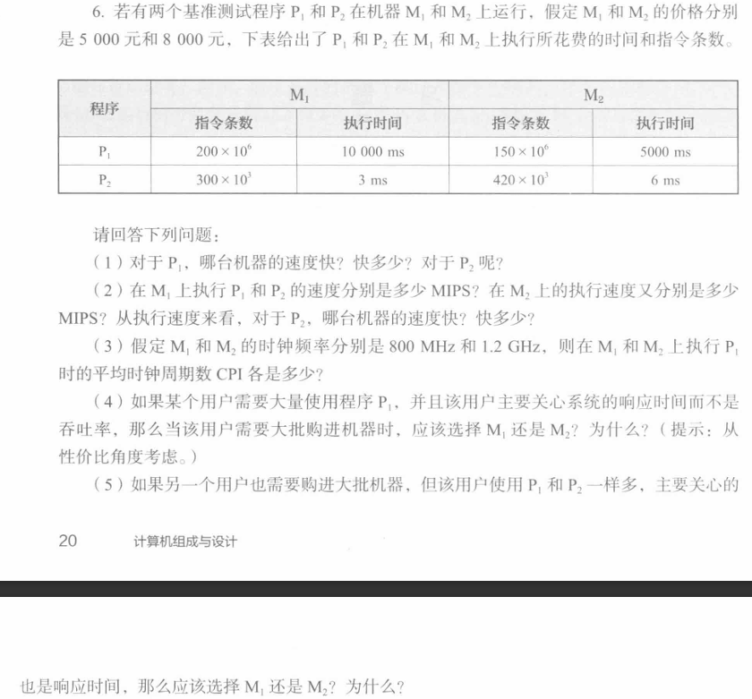
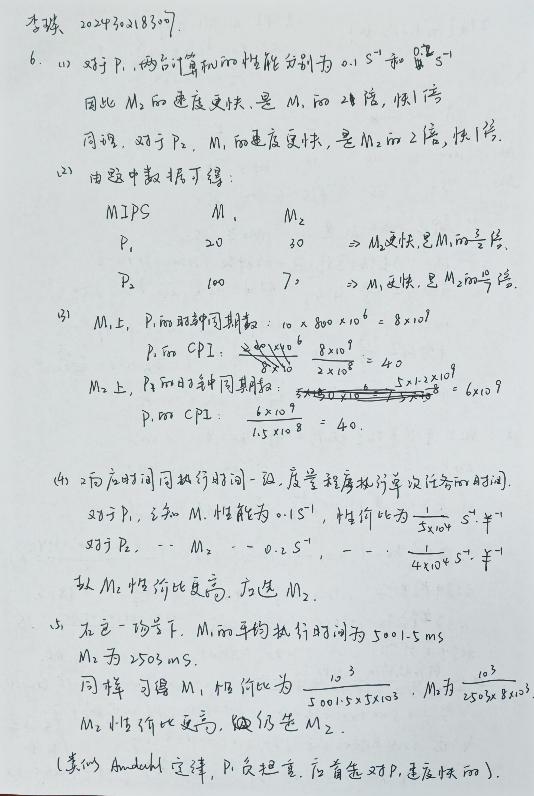
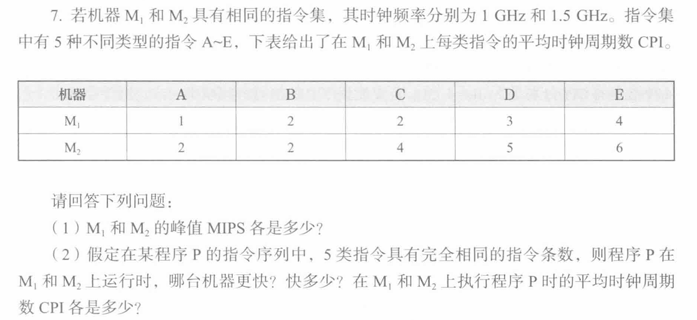
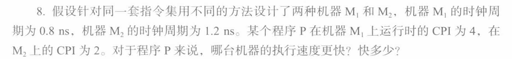
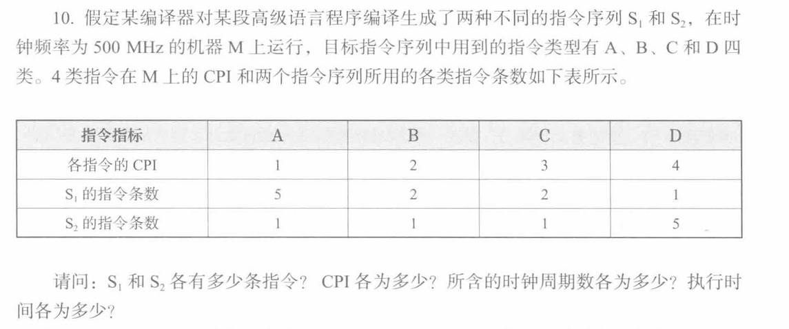
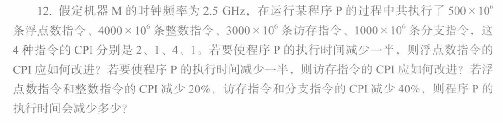
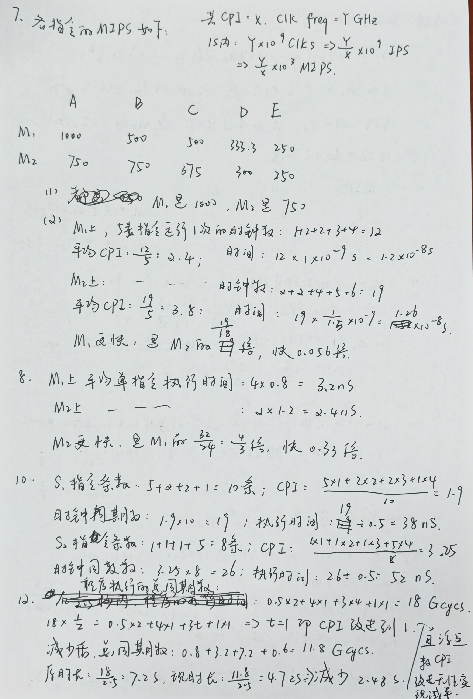
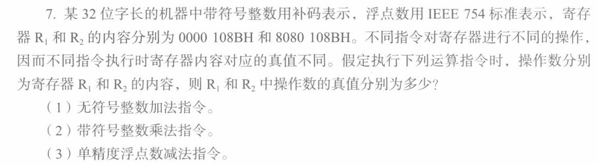
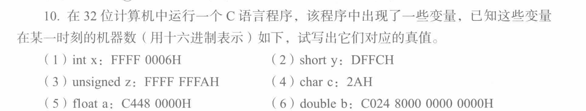
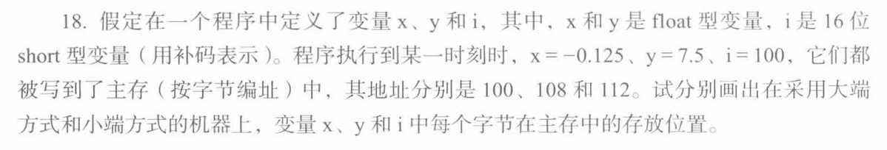

《计算机组成原理》理论课程作业与笔记归档¶
📖 阅读信息
阅读时间约 1 分钟 | 约 204 字 | 约 6 个公式 | 约 41 行代码
供存档和复习用。
第一周作业¶
李琰，2024302183007







第二周作业¶

这个题并不需要我们进行具体的运算。只需要按规则译码即可。
(1) 无符号整数，直接原码译码： \(R_1: 108B_{16}=4235_{10}\)，\(R_2: 8080108B_{16}=2155876491_{10}\)
(2) 有符号整数，按补码译码： \(R_1: 108B_{16}=4235_{10}\)，\(R_2\) 直接模运算： \(2155876491-4294967296=-2139090805\)
(3) FP32: S1E8M23, FP64: S1E11M52，首先写成二进制并且把符号位，阶码，尾数断开：
得到：
\[
R_1 = 0.00000000001000010001011_2 \times 2^{-126}\\
R_2 = -1.00000000001000010001011_2 \times 2^{-126}
\]
为简便，使用十六进制表记。
| 关系表达式 | 运算类型 | 结果 | 说明 |
|---|---|---|---|
| 0==0U | 无符号整数 | 1 | 0000 0000H = 0000 0000H |
| -1 < 0 | 带符号整数 | 1 | FFFF FFFFH(-1) < 0000 0000H(0) |
| -1 < 0U | 无符号整数 | 0 | 11…1B（2³²-1）>00…0B（0） |
| 2147483647 > -2147483647 - 1 | 带符号整数 | 1 | 011…1B（2³¹-1）>100…0B（-2³¹） |
| 2147483647U > -2147483647 - 1 | 无符号整数 | 0 | 7FFF FFFFH(2³¹-1) < 8000 0000H (2³¹) |
| 2147483647 > (int)2147483648U | 带符号整数 | 1 | 7FFF FFFFH > 8000 0000H (-2³¹) |
| -1 > -2 | 带符号整数 | 1 | FFFF FFFF(-1) > FFFF FFFE(-2) |
| (unsigned)-1 > -2 | 无符号整数 | 1 | FFFF FFFF(2³²-1) > FFFF FFFE(2³²-2) |


我们首先得到数据的字节型表示：
在小端序机器上面：
在大端序机器上面：
📝 如果您需要引用本文
Yan Li. (Sep. 27, 2025). 《计算机组成原理》理论课程作业与笔记归档 [Blog post]. Retrieved from https://dicaeopolis.github.io/campus-sources/SDC_assignments
在 BibTeX 格式中：